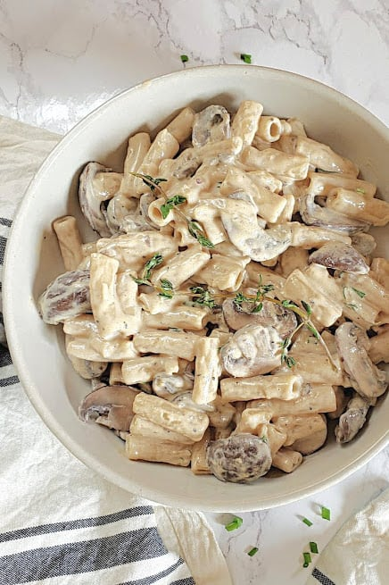

Creamy Mushroom Pasta

Affordable, quick and creamy. This recipe is definitely a keeper for mushroom lovers like me!
Ingredients
- Pasta (I prefer Penne, but anything works!)
- Cream
- Mushrooms
- Garlic
- Shallots
- Spring Onion (optional)
- Salt
- Black Pepper
- Cooking Oil
- Italian Seasoning (optional)
Steps
- Cook the pasta in boiling salted water.
- Chop two cloves of garlic, one shallot and an optional spring onion.
- Slice the mushroom into thin pieces.
- Saute the chopped garlic, shallot and optional spring onion with a little vegetable oil in a pan until aromatic.
- Saute the mushrooms until soft. Add some more oil if necessary.
- Add the cream and let the juice from mushrooms flavour it.
- Add salt, black pepper and the optional italian seasoning to taste.
- Once the cream sauce has reduced a little, add the cooked pasta.
- Cook until the dish until the cream sauce has reduced to the consistency of your liking.
- Serve the dish!
Home